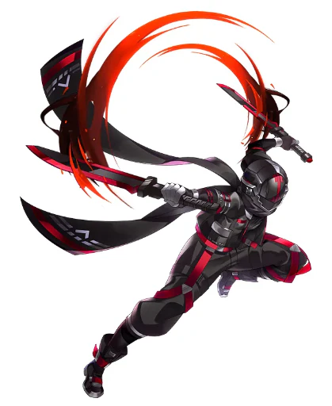
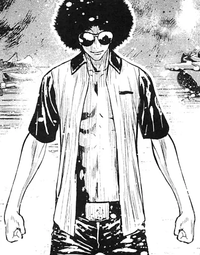
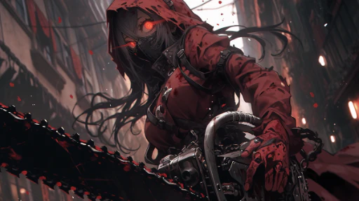
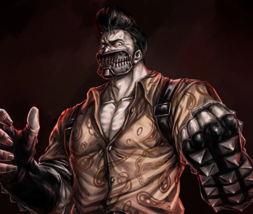
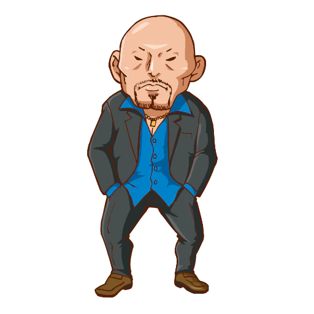
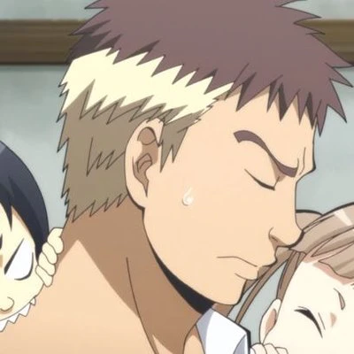
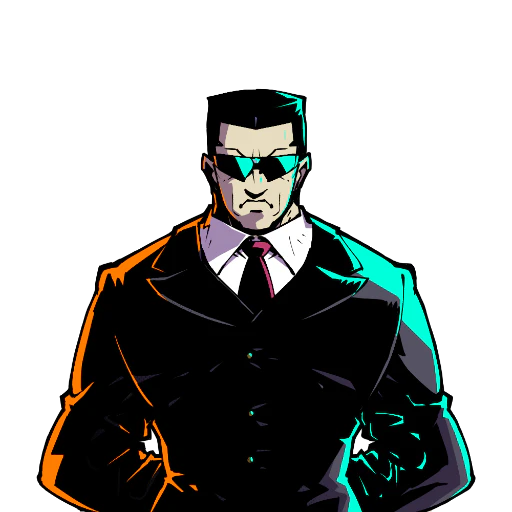
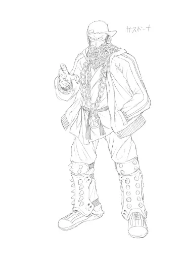
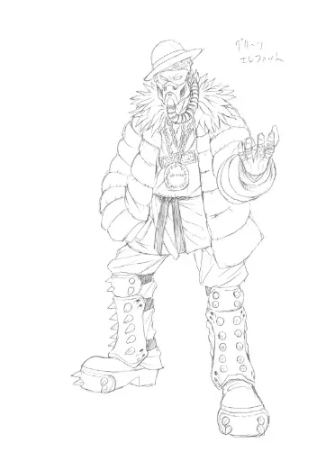

7:43PM크레이지 헤드:대기중타마망이 올때까지는 준비인것이와요
7:44PM크레이지 헤드:디스코드에 일단 설정을 보내둔것이와요
8:01PM크레이지 헤드:흐음
도모
8:04PM크레이지 헤드:크레이지 헤드입니다
오늘 스타트시나리오를 하게된
닌자마스터 텐구 스피츠입니다.
텐구 엔젤의 해설은 물리음성이 없기에 편히 아트모스피어로 읽으면 좋습니다
@적당감
하지만 이 혈기, 분명 훌륭한 닌자헤즈가 되어줄듯하니
텐구는 기쁩니다.
그럼 우선 시나리오의 시작전에
참가하는 PC의 간단한 소개를 시작하겠습니다.
PL끼리 조금은 교류할 소개는 필요하니까요
없다면 다이스 이쿠사가 됩니다.
오무라 인더스트리에서 일하던 중, 우정! 을 나눴던 지인의 우라기리에 당했습니다.
따라서...
“…인간 관계에 신뢰는 실제 중요. 그것이 악인 사이일지라도.”
“우정은 믿을 수 없다. 신뢰다. 오랫동안 쌓은 신뢰만이 그윽하다.”
8:10PM크레이지 헤드:중후한 닌자다
소우카이야는 실력제이니까요
그럼 다음은 크레이지 헤드=상 도죠
8:11PM크레이지 헤드:도-모, 처음뵙겠습니다, 크레이지 헤드입니다.
도조를 운영하는 부모 아래에서 자란 평범한 여고생이였지만
야쿠자와 닌자에게 도조의 모두를 살해당하고 본인도 NRS 상태에서 킬앤슬래시 될 위기였으나
이 무슨! 아마존 클랜의 히폴리테 닌자=상의 빙의로 고대 로마 이아이도의 힘을 얻어 역으로 킬앤슬래시해버린 것이다!
8:14PM크레이지 헤드:그 뒤로 날뛰다가 소닉붐=상의 스카우트로 소우카이야 닌자가 되었다
닌자계의 망태기 할아버지 아닌가?
@적당감
8:15PM크레이지 헤드:그것은 텐구엔젤만이 알고 있습니다
소닉붐=상은 알지도 모른다
이야기를 막 퍼뜨리지만 숨겨주기도 하는 것이다
서로 궁굼한걸 렐리할 것이 아니라면
시나리오를 개시합니다
준비는 되었습니까 PL헤즈 여러분?
8:17PM크레이지 헤드:요로콘데
=====================================
시나리오- 브라더스 온 야쿠자 빌딩
개시!!
===================================
=================================
담합 페이즈
=================================
그중 화려한 번화가이자 야쿠자들이 즐비한 네오 카부키쵸입니다.
수많은 사업소, 작은 영세 블랙 코퍼레이션이 섞여있는 이 도심지에
평범한 야쿠자 사무소로 위장한 소우카이야의 건물
그 안의 닌자들의 대기장소에 여러분들은 모여있습니다.
이곳에 모인 이들은 다른건 모르지만 단 하나의 공통점은 각자 알고 있습니다.
그리고 그리스한 흐름, 검은 색, 피부를 가린 두사람고 달리
두 사람의 시야엔 한사람이 눈에 띕니다
펑키한 아프로 머리, 요즘엔 볼리가 없을 클래식한 썬글라스
옷을 벗어버린 상체에 은은히 빛나는 타투
블랙팬츠를 입은 닌자라고 생각할 수 없는 아웃로 오브 아웃로

8:24PM[닌자] 수어사이드:묘한 아트모스피어를 뿜는 남자도 여러분들과 대기하고 있습니다.8:25PM[닌자] 수어사이드:(RP를 하고싶다면 해도 좋고, 아니라면 진행을 합니닭
"하아, 젠장...그 망할자식도 자리를 비웠는데 왜 소환된거지."
불만이 가득한 틴에이저로 보이는 남자는 다리를 꼬며 말합니다
"충고 전에, 아이사츠부터 하지. 도-모, 오픈 페이스입니다."
8:26PM[닌자] 수어사이드:"...도모, 오픈 페이스=상. 수어사이드입니다."
8:27PM크레이지 헤드:"도-모, 크레이지 헤드입니다"
8:27PM[닌자] 수어사이드:그럼 그말에 미간을 좁히며 수어사이드라 밝힌 닌자는 말합니다.
8:27PM[닌자] 수어사이드:아이사츠를 하는 것을 보아할때 닌자는 맞는 모양입니다
8:27PM크레이지 헤드:근처의 빌딩의 그늘속에 있다가 나타나면서 아이사츠합니다
8:27PM크레이지 헤드:보이스 체인저 따위가 없기에, 여고생의 목소리가 들릴것
8:28PM크레이지 헤드:"소닉붐=상의 스카우트는 실제 바이올런스하기에"
8:29PM[닌자] 수어사이드:"...뭔가 불만일까? 충성하는 멍멍이라면 미안하지만 말이야."
8:29PM크레이지 헤드:"고대 로마 이아이도의 힘이 아니였다면 본인도 오탓샤 중점이였을지도 모르지요!"
8:29PM[닌자] 수어사이드:그는 으쓱이며 팝튀게 말합니다. 예의는 찾아보기 어려우네요
"신뢰를. 오랫동안 쌓지 않은 상대 앞에서는."
8:30PM[닌자] 수어사이드:"하, 그런걸 감추며 살다가 이꼴이 된거야. 난 날 더 숨길마음은 없어."
펑크하게 살기로 마음먹었다. 그는 말합니다.
8:30PM크레이지 헤드:"무엇을, 오픈 페이스=상 큰 문제는 아닙니다"
"소닉붐=상은 식스게이츠의 강자!"
"무딘 카타나에는 당하지 않지요!"
8:30PM[닌자] 수어사이드:"그래, 딱히 그쪽 닌자들과 문제는...칫."
크레이지 헤드의 말에 으쓱이며 말하려다가
혀를 찹니다
부정하지 못할 말이기때문일겁니다.
"퍼피가 타이거를 물려면. 아나필락시스 쇼크."
"소우카이야는. 하극상을 금하지 않는다."
"한다면. 준비해서 해라."
8:32PM[닌자] 수어사이드:"...방금걸로 당신이 그닥 싫지는 않아졌군."
오픈 페이스=상의 말에 흠, 하고 내켜합니다
이 반항적인 틴에이져의 감성을 조금은 알것 같겠군요
그렇게 이야기를 나눌때
문이 열리며 사람이...아니, 닌자가 들어옵니다.

8:33PM[닌자] 레드 크래셔:그것은 붉은 장속을 입고 후드안 물리법칙을 무시하듯 빛나는 안광을 가진 닌자"도모, 후배 여러분들. 레드 크래셔입니다."
8:35PM[닌자] 레드 크래셔:"소닉붐 오니상의 닌자 퀘스트가 내려와 대리로 여러분들에게 브리핑을 하기위해 모았습니다."
8:35PM크레이지 헤드:"도-모, 처음뵙겠습니다. 크레이지 헤드입니다"
8:35PM[닌자] 레드 크래셔:소닉붐=상의 전달입니다
하고 붉은 장속의 멘포 너머로도 미인인듯한 여성은 말합니다.
풍만한 여성이군요.
8:35PM크레이지 헤드:칫
8:36PM[닌자] 레드 크래셔:(유카노=상 같은 야바이급 풍만이라면 스고이급 풍만은 된다.
(@적당감
8:37PM[닌자] 수어사이드:"도모, 크래셔=상. 그래서 첫 일이란 거군. 어딜 처리하란거야?"
가벼운 태도로 말하는 수어사이드=상입니다. 상대도 반응이 오지않는 것을 보아할때 안면은 있어보이네요
8:38PM[닌자] 레드 크래셔:"처리가 아니라, 보호중점의 임무입니다."
8:38PM[닌자] 레드 크래셔:크래셔=상의 말에 수어사이드=상은 골치아파하네요
8:39PM크레이지 헤드:"보호중점? 간단하군요!"
"처들어오는 적을 모조리 킬해버리면 되는것 아닙니까!"
8:39PM[닌자] 레드 크래셔:"기업레벨을 막 시작한 뉴비에게 맡기지 않습니다. 여러기업에 여러 닌자가 존재하니 개죽음이니까요."
레드 크래셔=상은 단호히 말합니다.
8:40PM[닌자] 레드 크래셔:"여러분들이 보호해야할 것은 근래 일이 생긴 야쿠자의 사무소입니다."
중위급 덩치, 야쿠자 클랜명은 [스트롱 타이거]란 야쿠자 클랜이라고 합니다.
8:41PM크레이지 헤드:"오오, 스트롱 타이거입니까"
"이름만은 그레이터급이군요!"
8:42PM[닌자] 레드 크래셔:"소우카이야의 멘타이를 파는 주요 수입원이자, 클론 야쿠자 비지니스의 장소니까요."
"덩치가 좀 있는 곳은 중요한 비지니스입니다."
멘타이는 마약, 불법이지만 시중에도 쉬이 돌아다니는 것입니다.
유명무실한 것이지요
8:43PM크레이지 헤드:합법 약물인 바리키도
오버도즈 하면 위험한 마약!
네츄럴리스트가 아니라면 신경쓰지 않는다!
8:43PM[닌자] 레드 크래셔:"그곳도 거래처로 클론 야쿠자와 멘타이를 잘 사주는 카인드 야쿠자 클랜, 그런데 불행한 일이 생겼습니다."
"산시타 닌자가 힘을 못이기고 점거를 한 것입니다."
8:44PM[닌자] 레드 크래셔:재난이라며 그녀는 끄덕입니다.
"대상은 최근 맛포쪽에서 떠들던 닌자 흉내를 내던 상습털이범...이었습니다만."
"아마 과정중에 붓다가 맛포들을 버린 모양이더군요. 마즈다 삼형제라는 구성중 둘이 닌자가 되었습니다."
닌자가 둘, 맛포가 아무리 있어도, 산시터라도 데카건이 있어도 이길 수 없습니다
닌자와 모탈의 격차는 그정도로 벽이 높습니다.
8:47PM[닌자] 레드 크래셔:"최근 야쿠자 클랜을 하나 몰살하고 자금은 횡령, 지금 저희 비지니스 상대로 비슷한 짓을 하고 있습니다."
이전은 저희 비지니스가 아니였지만 이번은 저희 소우카이야의 비지니스 상대라며 말합니다
"소닉붐=상은 마침 경험없는 뉴비인 여러분들에게 이 일을 맡기라고 했습니다. 전달로는...."

8:49PM[식스게이츠] 소닉 붐:-이런 가키라도 할 일, 빠르게 산시타놈들을 쳐죽여주고 정상화시켜라.8:49PM[닌자] 레드 크래셔:"-라고 여러분들에게 전달했네요. 분명히 해낼거라 오니상은 생각하는 것이겠죠."
8:50PM[닌자] 레드 크래셔:"...더불어 추가로 전달할 사항도 있습니다."
레드 크래셔=상은 후, 하고 숨을 내쉬며 말합니다
"제 동기인 닌자가 소닉붐=상이 이번 부재일 시기에 스카우트를 뛴다고 해당 닌자들을 만나러가서 연락이 끊어졌습니다."
"만일 당했다면 알려주실 수 있으실까요? 소정의 보상도 하겠습니다."
8:52PM크레이지 헤드:"오오, 단순한 산시타라 생각했으나 형제는 형제"
8:53PM[닌자] 수어사이드:"....이름이나 특징을 말해줘. 크래셔=상."
8:53PM크레이지 헤드:"서로간의 협공이 장기일지도 모르겠군요!"
8:53PM[닌자] 수어사이드:긁적이며 아프로 파마의 닌자도 말합니다
8:53PM[닌자] 레드 크래셔:(아아
8:53PM크레이지 헤드:"동기분의 이야기는 기억해두겠습니다! 요로콘데!"
8:54PM[닌자] 레드 크래셔:"이름은 임펄스=상, 전 호스트였으니 얼굴이 훤칠한 미남입니다. 손케이를 잘 아는 친구에요."
덴짓수의 닌자이니 특징도 명확하다고 합니다
8:55PM크레이지 헤드:"오오, 같은 덴 짓수의 닌자...."
8:56PM[닌자] 레드 크래셔:"고맙습니다. 그럼 우선도는 야쿠자는 되도록 보호. 클론 야쿠자는 명령권을 탈취당했을 가능성이 높으니 제거입니다."
"물론, 산시타 닌자들은 쳐죽이면 됩니다."
그녀는 추가로 마키모노를 건내줍니다
(두루마리-
"이것은 얼마되지 않은 해당 건물의 카메라를 핵한 것입니다. 잘 이용하시길."
8:58PM크레이지 헤드:"역시 스카우트를 거부한 닌자는 이렇게 되는 법이군요"
9:00PM[닌자] 레드 크래셔:"....글쎄요. 소닉붐 오니상의 말론 '시간은 걸려도 하면된다.'라고 했습니다."
참고로 크레이지 헤드=상에게 말합니다.
9:00PM크레이지 헤드:움찔
"그렇지요, 하면 되지요"
9:01PM[닌자] 레드 크래셔:"그럼 모두 해당 닌자를 쳐죽이고 돌아오길. 일의 해결뒤 보수는 소닉붐=상이 돌아오면 줄겁니다."
9:02PM[닌자] 레드 크래셔:"더불어 조금의 보호비를 챙기는 것은 좋다고 들었습니다."
과하지만 아니면 좋다, 그리 그녀는 말합니다.
9:03PM[닌자] 수어사이드:"그럼 더 설명할게 없다니 가볼까. 그래도 사회의 쓰레기가 상대라 마음은 편하군."
9:04PM[닌자] 수어사이드:다리꼬고 있던 수어사이드=상은 다리를 풀고 일어나네요
9:05PM크레이지 헤드:"부디, 고대 로마 이아이도는 무적이므로!"
9:05PM[닌자] 수어사이드:"좋아, 다 박살낼테니 안심하라고. 빅 리무진을 탄 기분을 느낄거다."
"내 소울 어브솝션의 짓수는 강하니까."
그는 양손을 블랙팬츠에 넣고 걸어갑니다
9:06PM[닌자] 수어사이드:"그럼 오탓샤데. 크래셔=상."
그는 앞장서 가려다가
"아, 마키모노 챙긴 사람이 앞장서라고."
....힘은 있는 듯하지만 역시 틴에이져란 느낌의 얼빠짐이 보입니다.
9:07PM크레이지 헤드:그럼
9:07PM[닌자] 수어사이드:그렇습니다
최신형 마키모노라 IRC로 입력한 자료가 떠오르네요
내용을 보여드리겠습니다.
(설명하지! 닌살세상의 마키모노란 하이테크의 그윽한 디자인을 갖춘 훌륭한 디바이스인것이다!
파란 셔츠는 뭐지
9:10PM[모탈] 야쿠자 1:전 모탈 야쿠자 1

9:10PM[모탈] 야쿠자 2:전 모탈 야쿠자 2입니다닌자 옆에는 오이란?
9:10PM[모탈] 야쿠자 2:복수로 존재하지만 얼굴은 다 다르다구요!
닌자옆은 오이란, 전후등 외설당하고 있습니다
그들의 뒤로는 적어도 반드시 구해야할 클랜의 구심점
그레이터 야쿠자가 있군요
뒤에서 공포에 떤채로 있습니다.
아마 건물 내 시큐리티를 담당중일겁니다
문중에선 해킹이 필요할지 모르겠군요
아래가장 큰녀석은 빌딩 입구입니다
저기로 PC들이 들어서 입장합니다
9:13PM크레이지 헤드:흠
9:13PM크레이지 헤드:창문으로 엔트리할수도 있겠군

9:13PM[모탈] 마즈다 타로:반갑습니다제가 현상수배중인
맡형입니다
9:13PM크레이지 헤드:마즈다 타로인가
9:14PM[모탈] 마즈다 타로:(주먹코에 쭈굴해있어서
(이거라 생각했어서 채용했습니다
9:14PM[모탈] 마즈다 타로:분명 마즈다 삼형제는 셋이서 돌아다니는 이들이지만
9:14PM[모탈] 마즈다 타로:그는 창고로 보이는 방에서 홀로 있습니다
9:15PM[모탈] 마즈다 타로:저 박스는...보수가 들어있을수도 있고
9:15PM크레이지 헤드:"모탈인 큰형은 동생들을 제어못하는 모양이군요"
9:15PM[모탈] 마즈다 타로:아니면 뭔가 비싼게 들어있을수도 있습니다
9:15PM크레이지 헤드:일단
9:15PM크레이지 헤드:'보호비'로 받으면 되겠군
9:16PM[닌자] 수어사이드:"그런가...흠, 그렇겠지. 젠장."
9:16PM크레이지 헤드:"저도 닌자가 됬을때는 고대 로마 이아이도로 킬앤슬래시! 했으니까요!"
9:16PM[닌자] 수어사이드:그는 뭔가 마음에 안드는 기억이 떠올랐다는듯 혀를 찹니다.
9:16PM크레이지 헤드:음, 어쩔수없나
"임펄스=상의 이야기를 듣기 위해서 마즈다 타로를 확보하는것이?"
"과잉 살상은 좋아하지 않는다. 살상은 딱 필요하게."
9:17PM[닌자] 수어사이드:"모탈보단 저 닌자놈들을 죽여야겠지. 대빵도 저런 상태면 뭐든 시킬수도 있을테고...."
"뭣보다 저기 시체가 가득한 방은 마음에 걸려."
그레이터 야쿠자의 전용룸 앞에는
9:17PM크레이지 헤드:"오오, 정면으로 들어가면 야쿠자가 적이 될지도 모르지요"
9:17PM[닌자] 수어사이드:총에 당한 야쿠자의 시체와 클론 야쿠자들이 규율있이 서있습니다.
9:18PM크레이지 헤드:"클랜을 보호하러 가서 몰살하면 실제 곤란"
9:18PM[닌자] 수어사이드:다다미 바닥으로 되있는 연회장으로 보이는 곳은
마치 지옥처럼 보이는 곳이 되어 있습니다.
"...내가 앞장선다. 너희 둘은 적당히 도와주면 좋을것 같군."
9:20PM[닌자] 수어사이드:그는 마음에 안든다, 라는 감정이 얼굴에 들어나있습니다.
"간다."
9:20PM[닌자] 수어사이드:(그럼 더 브리핑할게 없다면
(바로 본편으로 가겠사와요
참고로 추가로
저기 클론 야쿠자가 하나 있는 방의 야쿠자 둘인 방은
야쿠자들은 구속되어 있고
클론야쿠자는 그들을 옆에서 감시중입니다
9:22PM[닌자] 수어사이드:(그럼 더 없다면 하지마루요?
닌자를 죽인다.
9:22PM크레이지 헤드:덴 짓수로 행동불능으로 만들면되겠군
가자
그럼 본편개시-
====================================
시나리오 개시!
==================================
츠치노코 스트리트의 한 빌딩이 었습니다
다른 곳보다는 나름 광이 나는 곳이 었지만
오늘은 어째선가 을씨년스러운 분위기도 내는듯하는 군요
저 빛나는 빌딩의 내부에 시체가 가득한걸 알아서일지도 모르겠습니다.
9:25PM[닌자] 수어사이드:"그럼 쳐들어가보자고. 쓰레기놈들을 박살내러...."
주먹을 팍, 부딪치며 수어사이드=상이 걸어갑니다.
9:27PM크레이지 헤드:"오호, 허나 저도 IRC등의 분야는 문외한"
"분업이군요!"
9:28PM[닌자] 수어사이드:"나라면 단박에 끝낼수있다. 내가 갈까? 아니면 해볼건가?"
수어사이드=상은 누가 시작하겠냐고 물어봅니다
9:30PM크레이지 헤드:"클론 야쿠자라 해도 결국 모탈"
닌자의 적은 아니다!
문을 지키는게 일인지 여러분들이 와도 가만히 마치 인왕처럼 문을 지키고 있군요.
9:33PM크레이지 헤드:"하나는 제가 맡지요"
얘네 체력이 1인가 2인가
9:33PM크레이지 헤드:덴 짓수다!
왼쪽? 오른쪽?
짓수를 사용하는군요
그렇다면 코스트를 지불하며
발동판정을 해야합니다
흠
오픈 페이스=상이 뉴런을 굴리면...
그렇군요
분명 클론 야쿠자는 일반 산시타 야쿠자보다 강하지만
카라테 미사일이라면 1발에 죠루리인형처럼 시체로 만들수있습니다.
그렇다면...내가 선봉을 잡겠다!
보아라! 경감1이 없다면 스타팅 최강의 짓수일 카라테 미사일을!
발동 롤?
정신점도 1점 지불해주시고요
rolling 7d6>=4
7
=7
뭔가 잘못되었다
rolling 7d6
(++++++)
3
1
2
4
5
1
3
19
안넣어도 자동처리됩니다
그냥 >만 붙이세용
방독면을 멘포 삼아 쓴 닌자가, 오른손을 뻗는다.
그럼 대상을 지정정
그 속도는 그야말로 미사일!
클론 야쿠자가 이상을 알아챘을때는
이미 몸에 비명도 못지를 커다란 구멍이 몸통에나고 나서였다.

9:42PM[모탈] 클론 야쿠쟈 Y-10형:두 클론 야쿠자는바이오 용액을 흘리며
그대로 사망합니다
"전진. 작은 룸을 정리한다."
"보호비도 걷는다. 원 스톤 투 버드다."
9:43PM[닌자] 수어사이드:휘익-,하고 휘파람 소리냅니다
그럼 세사람이 문으로 향하면
클론 야쿠자가 지키던 전자락이 걸려있는 문을 발견합니다.
이것은 해킹이 필요해보이는군요.
뉴런으로 판정해야하며, 난이도는 하드입니다.
해보겠사와요.
9:45PM[닌자] 수어사이드:닌자의 손가락테크닉으론 타이핑속도로 산시타도 파이어월을 뚫는 것은 가능하겠지만
오픈 페이스=상이 나서나요?
(CV. 파마남)
9:45PM[닌자] 수어사이드:그럼 도죠
참고로 실패하면 정신점 1데미지입니다
rolling 8d6>5
(+++++++)
4
4
4
2
4
6
4
6
2 Successes
9:46PM[닌자] 수어사이드:울트라하드2!
그럼 오픈 페이스=상은 전자문에 붙어서 바로 LAN을 연결
핵을 시작했고
전자의 파도에서 모탈해커 하나가 저항하다가 삼도천 리버를 건너간 것을 LAN접속을 통해서 느낍니다.
전자락의 문은 그와 동시에 열리네요
"유감이다."
9:48PM[닌자] 수어사이드:"그런가...닌자와 뉴런대결을 하면, 텐사이급도 뉴런에 무리가 간다고 들었지."
9:49PM크레이지 헤드:"결국 우리가 이곳에 오지 않으면 점거한 닌자의 심심풀이가 되는것이?"
9:49PM[닌자] 수어사이드:"빌어먹을, 정말 마음에 들지않는군....정말이야."
9:49PM크레이지 헤드:오이란과 전후하고 있던 광경을 떠울리고 멘포 안에서 얼굴을 찡그립니다
9:49PM[닌자] 수어사이드:펑키한 헤어의 그는 한층 불만이 얼굴에 묻어나옵니다
9:49PM크레이지 헤드:목소리도 불쾌감이 드러나겠지요
9:50PM[닌자] 수어사이드:그럼 문을 열고 들어가면
큰 십자형 복도가 보입니다
멀지 않은 벽면에는 비싼 우키요에의 가품이 걸려있고
방이 네곳, 정면에 문이 하나 있겠군요
야쿠자들이 인질로 잡혀있는 곳은 두곳입니다.
9:51PM크레이지 헤드:"일단 방 네곳을 뒤진 뒤에 들어가지요"
"인질부터?"
9:51PM[닌자] 수어사이드:"인질부터겠군."
그는 끄덕입니다.
"수어사이드=상. 카라테에 자신은 있나."
9:52PM[닌자] 수어사이드:"걱정마라, 해주지."
"좋아, 하나 쓰러뜨리면 둘중 한곳이 위험할것 같고..."
"각자 돌입해서 처리하지."
그는 내가 한곳 맡겠다
그리 말합니다
"나는 복도에서. 놓쳤을 경우에 저격한다."
9:54PM[닌자] 수어사이드:수어사이드=상은 끄덕입니다
9:54PM크레이지 헤드:"좋은 플랜이군요"
9:55PM[닌자] 수어사이드:그럼 나뉘어서 엔트리 & 앰부쉬합니까?
9:55PM[닌자] 수어사이드:그럼 두 닌자는
오픈 페이스=상의 로지컬 택틱스에 따라서
몸을 날립니다
닌자각력은 클론 야쿠자라도 감당이 불가
확정적으로 첫수를 잡습니다
9:56PM크레이지 헤드:오오
9:56PM[닌자] 수어사이드:그럼 맨손으로 이얏!
9:56PM크레이지 헤드:짓수는 아끼고
9:56PM[닌자] 수어사이드:=
rolling 4d6>4
(+++)
4
6
5
3
3 Successes
9:56PM크레이지 헤드:카라테로 갈까...
9:56PM[닌자] 수어사이드:그대로 수어사이드=상은 카라테로
"이얏!"
돌려차기로 클론 야쿠자의 머리를 날려버렸다
9:57PM[닌자] 수어사이드:헤드=상도 좋은 것으로 도죠
짓수를 써도 좋고, 카라테로 쳐도 좋습니다
@자유
9:57PM크레이지 헤드:양손의 카타나를 휘두른다!
데이터는 맨손이지만
9:58PM[닌자] 수어사이드:카라테 도죠
9:58PM크레이지 헤드:=
rolling 3d6>4
(++)
3
5
6
2 Successes
"이얏!"
10:00PM[닌자] 수어사이드:그럼 크레이지 헤드=상의 이아이도!
예리한 일섬이 클론 야쿠자를 분해!
10:01PM크레이지 헤드:양단된 클론 야쿠자에 흥미는 없다
인질로 잡혀있던 야쿠자를 보죠
10:01PM[모탈] 야쿠자 1:"아이에에에?! 닌자, 어째서 닌자 또 난데에에...?!"
10:01PM[모탈] 야쿠자 2:"아이에에에!? 우리들은 다죽었어...아이에에...!"
10:01PM크레이지 헤드:"시끄럽다!"
10:01PM[모탈] 야쿠자 2:단체 실금!
야쿠자들은 NRS로 공포에 절었다!
10:02PM크레이지 헤드:"말해라! 너희는 어느 클랜의 야쿠자냐!"
"스트롱 타이거의 야쿠자인가?"
10:04PM[모탈] 야쿠자 1:"히이이...스, 스트롱 타이거의 야쿠자입니다...!"
10:04PM[모탈] 야쿠자 2:"히익, 우리 클랜은 끝이야. 닌자들이 다 죽일거야...!"
다 큰 험상궂은 아저씨들이
10:04PM크레이지 헤드:"그렇군 그래, 나는 소우카이야의 닌자다"
10:04PM[모탈] 야쿠자 2:공포에 절어있군요
10:05PM크레이지 헤드:"이 곳을 점거한 닌자를 킬하러 왔다, 알겠지?"
10:05PM[모탈] 야쿠자 2:"하, 하이...그렇지만 그 닌자들 강해요!"
10:06PM[모탈] 야쿠자 1:"저희 소우카이야에서 산 클론 야쿠자가 순식간에 잿더미...그리고 네기토로로...!"
히이...히익...!
10:06PM[모탈] 야쿠자 1:하고 야쿠쟈들은 겁에 질려있습니다
10:06PM[닌자] 수어사이드:"어이가 없군...이런 어른들이라니."
10:06PM크레이지 헤드:"결국 그 닌자들도 프로그 인 어 웰이다"
"그리고 우리는 셋이지. 3대2는 누가 이기지?"
10:07PM[닌자] 수어사이드:"놈 하나가 1이지만 우린 1이상이다. 적어도 난 2는 넘는다. 이미 두배가 차이나는군."
그는 자신있게 말합니다
이 무슨 닌자계산! 하지만 확실히 닌자는 1명이라고 1이 아닐수있다. 실제 맞는 이야기입니다
10:08PM크레이지 헤드:그렇다면
상자를 까도록하자
10:08PM[닌자] 수어사이드:그럼 여기에 있는 것들은 금고인데
10:09PM크레이지 헤드:이런, 금고인가....
그럼 묻도록하지.....
10:09PM[모탈] 야쿠자 1:"히이이, 니, 닌자=상들 이곳은 저희 자금입니다. 이미 닌자들이 오이란과 스시로 잔뜩 써서...!"
10:09PM[모탈] 야쿠자 2:"그리고 저희 아니키를...! 분명 지금 아니키가 사무실 안에...!"
10:09PM크레이지 헤드:"이 주변 방에 있는것 모두 금고인가?"
"잘 계산해보도록."
"너희 오야붕과 너희의 목숨. 금고의 잔액."
"어느쪽이 비싼지."
10:10PM[모탈] 야쿠자 2:"히이...그...그...."
야쿠자는 흔들렸다. 여기서 돈을 뺏기면 상납금이 모자랄지도 모른다. 하지만 아니키가 없어지면 클랜이 와해된다...!
"아, 아니키입니다...!"
10:11PM[모탈] 야쿠자 1:"하, 하이! 아리가또고자이마스!"
"그렇겠지?"
10:11PM크레이지 헤드:"어느정도가 좋을까요 오픈 페이스=상."
10:11PM[모탈] 야쿠자 1:그들에게 거부권은 없었다. 닌자의 가공할 힘을 이미 알고있으니까
잠시 물과 화장실 좀
10:12PM[모탈] 야쿠자 1:그럼 각자금고에 있는 금액은...
(아아, 돌아오면 말하는걸로
10:12PM크레이지 헤드:(오오
10:16PM[모탈] 야쿠자 1:그러면
금고에 들어있는걸 야쿠자들이 열면
각 방에 들어있는 것은...!
정제 멘타이가 2개씩, 만엔권x15가 있군요.
10:17PM크레이지 헤드:세 금고 모두인가?
10:18PM[모탈] 야쿠자 1:세 금고라면?
지금 양옆 방은 1개씩이에요
저긴 안들어가봐서
모르네요
10:18PM크레이지 헤드:아직 안들어간 방이였지
"흠흠"
10:19PM[모탈] 야쿠자 1:토탈은 그렇습니다
10:19PM크레이지 헤드:정제 멘타이인가.....
10:20PM[모탈] 야쿠자 1:정제 멘타이는 개당 만엔권 2점입니다
10:21PM[닌자] 수어사이드:"흠...아, 이건 적당히 그거다. 그거...그러니까 보호비다. 좀 가져갈테니 그러려니해라."
놔뒀다가 수금이라면 어느때쯤?
보스 킬하고나서요?
38만엔 어치 중 얼마를 삥뜯어야 적당할까
10:22PM크레이지 헤드:흠흠
(만엔권 10
10:22PM크레이지 헤드:멘타이는 얘네가 팔도록하자
10:23PM[닌자] 수어사이드:실제 그렇게 주고 있다
10:23PM[닌자] 수어사이드:(@본 닌자마스터 그렇게 주고있다
10:23PM크레이지 헤드:각 금고에서 만엔권을 9장씩 챙기자구
아니 잠깐만.....
"너희, 상납금은 얼마지?"
10:25PM[모탈] 야쿠자 1:상납금은...아직 모자랍니다요. 보통 클론 야쿠자나 멘타이 비용까지 합치면..."
"한 만엔권 40점정도...."
10:26PM[모탈] 야쿠자 2:"그, 그렇습니다요. 그렇습니다요...."
덜덜 떨면서 야쿠자들이 말합니다
10:26PM크레이지 헤드:칫
만엔권 18장을 셉니다.
(다른 방에서 벌충하면 된다는 이론
10:28PM[모탈] 야쿠자 2:그럼 각 금고에서 9점씩으로 이해?
10:28PM크레이지 헤드:난 6만엔을 말할 생각이였는데
하지만 금고는 3개 이상 남아있다...
10:29PM[모탈] 야쿠자 2:"아아...아이에에에...아, 알았습니다. 아니키를 부탁드립니다..."
10:29PM[모탈] 야쿠자 1:"아이에에에...아, 아니키를 부디..."
10:29PM크레이지 헤드:모든 금고에 돈이 들어있다고 생각할순없다
10:29PM[모탈] 야쿠자 1:파랗게 질려있는 야쿠자들은 그리 고개를 숙입니다
10:30PM크레이지 헤드:"보호비를 받았으니 당연한 일이다"
10:30PM[닌자] 수어사이드:"뭔가 나쁜쪽이 된 기분이구만..."
이건 펑키하지 않은 기분이군...
수어사이드=상은 그리 말합니다
10:30PM크레이지 헤드:"타이거가 드래곤에게 먹히는 광경일뿐"
10:31PM[모탈] 야쿠자 1:"그, 그럼 저희는 가봐도 좋을까요....?"
10:31PM크레이지 헤드:"타이거는 레빗을 먹는다, 그렇지 않나?"
10:31PM크레이지 헤드:문쪽으로 시선을 주며
10:31PM[모탈] 야쿠자 2:"그, 닌자들이 감시시킨건 저희를 게임으로 논다고한거라..."
10:31PM크레이지 헤드:나가는걸 허가합니다
"간단하지?"
10:32PM크레이지 헤드:"카라다니키요츠케테네"
10:32PM[모탈] 야쿠자 2:그럼 야쿠자들은 고개숙여 황급히 실금하며 도망칩니다
히이 히익
10:32PM크레이지 헤드:끄덕끄덕
10:32PM[모탈] 야쿠자 2:하고 공포에 절어있는체 말이죠
주머니가 두둑해지는 일이 었군요
10:33PM크레이지 헤드:"그럼 다른 방으로?"
PC들은 전원 DTK를 2점얻습니다.
10:34PM크레이지 헤드:끄악!
(실제 많이 챙겼다
우측상단 방을 확인해요
10:35PM[닌자] 수어사이드:"자, 그럼 정리는 끝났다. 다음은 안의 시체 있는 곳? 아니면 마즈다 첫째쪽?"
10:36PM크레이지 헤드:"마즈다 타로는 가장 마지막에 확인하지요"
10:36PM[닌자] 수어사이드:수어사이드=상은 주머니에 손을 넣은체 말합니다
"좋아, 그럼 위로 가자고들."
그럼 세사람이 들어서면
그곳에는 옷칠이 되어있는 고급스러운 야쿠자 클랜의 보물실로 보이네요
클랜의 상장과 상패, 그리고 보스의 취미인듯한 이런저런 모형등 다양한 값진게 전시되어 있습니다.
10:37PM크레이지 헤드:"이런, 클랜의 보물인가...."
"이런곳에 있을법한 보물은 분명 클랜의 상징"
10:38PM[닌자] 수어사이드:그리고 가장 안쪽에는 클랜의 상징인듯한 호랑이천이 묶여있는 야리가 있습니다."
10:38PM[닌자] 수어사이드:그 앞에 그리고 원래 이곳의 야쿠쟈로 보이는
10:38PM크레이지 헤드:"가져가는것은 좋지 않을지도 모르겠군요. 오픈 페이스=상"
10:38PM[닌자] 수어사이드:총구멍이 잔뜩난 시체가 보이네요
10:38PM크레이지 헤드:타이거 야리(가칭)인가
10:38PM[닌자] 수어사이드:"딱봐도 욕심부리다가 뒤져버린 놈이군. 그것도 자기 클랜이 위험할때 말이지."
마음에 안드는 놈이 뒤져있군
수어사이드=상은 그리 말합니다
10:39PM크레이지 헤드:"야리를 들고 맡서려한 용감한 야쿠자일지도 모르지요, 수어사이드=상"
10:39PM[닌자] 수어사이드:고급스런 천과 옷칠된 창대, 그리고 선명한 날의 야리는
10:39PM크레이지 헤드:"죽은자는 말이 없다구요"
10:39PM[닌자] 수어사이드:틀림없는 명품입니다.
10:39PM크레이지 헤드:이건 챙기지말자!
"그 다음 돌려준다. 펑크하지 않나?"
10:40PM크레이지 헤드:"야리를 쓸줄 아십니까, 오픈 페이스=상?"
10:40PM[닌자] 수어사이드:"흠...뭐, 그건 좋지만."
"쓸 사람이 없다면. 놔둬도 좋겠지."
10:40PM[닌자] 수어사이드:"일단 저 총구멍난 것을 볼때 방에 함정이 있을것 같군."
"그리고 난 맨손이 가장 강해."
으쓱이며 말합니다
10:41PM크레이지 헤드:"마즈다 타로를 볼 때군요"
10:41PM[닌자] 수어사이드:"마즈다 삼형제의 큰형쪽인가. 빨랑 불게하자고."
"자기 동생들이 뭔 짓거리를 저지르는지 알고 하게하는지...."
수어사이드=상은 그에 의욕이 넘쳐보입니다
10:43PM크레이지 헤드:(그러고보면 수어사이드=상 가족이 야반도주했지www)
생각보다 허술한 창고방
조용한 것을 제외하곤 먼지맛이 공기중에 느껴질것 같습니다
싸구려 램프로 빛이 들어오는 방에 의기소침해져 쭈구려있는 사내가 있군요
그의 이름은 마즈다 타로, 마즈다 삼형제의 맏이입니다
다만 그 위상은 없어보이지만요
10:45PM[닌자] 수어사이드:"어이! 거기 쫄아있는 형씨! 빨랑 고개돌려 상황설명해라!"
10:45PM[닌자] 수어사이드:그리고 수어사이드는 바로 마즈다 타로에게 다가가 윽박지릅니다
뚝, 뚝, 뚝.
10:46PM[모탈] 마즈다 타로:"히, 히이익!? 닌자!? 동생들 말고 닌자가 또...!?"
아이에에에에-!?
하고 기겁하며 NRS를 겪어보이지만
실금은 하지않습니다. 아마 동생들과 다니면서
조금은 닌자내성이 생긴걸겁니다
10:46PM크레이지 헤드:"닌자가 둘 있다면 그 이상 있을수도 있다"
"생각하지 못했나?"
10:47PM[모탈] 마즈다 타로:"히이익....붓다...붓다는 자고있는건가...대체 왜...!?"
아이에에, 그는 공포로 아이에에에하고 떨고있군요
10:47PM크레이지 헤드:(붓다는 게이에 새디스트이기 때문이지)
10:48PM[닌자] 수어사이드:"...젠장, 깡도 없어 보이잖아. FUCK! 저지른게 납득이 안가는 자식이다."
창고 한곳에 다리를 걸치며 수어사이드=상은 불만을 토로하네요
"아무래도. 얻을 건 없는 모양인데."
10:49PM크레이지 헤드:"닌자 흉내를 내며 강도질을 벌였다 들었는데"
10:49PM[모탈] 마즈다 타로:"닌포...닌포를 흉내냈을뿐이야...그랬을뿐이라고..."
"그런데 동생들이...동생들이...맛포에 쫒겨서 빌딩에서 떨어져버린 뒤에...."
"악마에게 잡혀버렸어...내 동생들....지로, 사부로...!"
10:50PM크레이지 헤드:"그런가"
10:50PM[모탈] 마즈다 타로:그는 동생의 이름을 부르며 울고있습니다
10:50PM크레이지 헤드:"........그런가."
크레이지 헤드에게 생각하게 하는것이 있군....
10:51PM[닌자] 수어사이드:"....떨어졌다라."
10:51PM크레이지 헤드:"수어사이드=상, 오픈 페이스=상"
10:51PM[닌자] 수어사이드:FUCK...
하고 그는 썩은 표정이 되네요
10:51PM크레이지 헤드:"괜찮다면 마즈다 타로와 단둘이서 이야기할수 있을지?"
10:52PM[닌자] 수어사이드:"...뭐, 좋아. 불만은 없어. 하지만 깡도 뭣도 없는 울보인데 좋나?"
그는 하아, 크게 한숨쉬며 말합니다
10:53PM크레이지 헤드:답변을 부탁하네, 오픈 페이스=상!
10:54PM크레이지 헤드:"그럼 잠시 자리를 비워주시길"
10:54PM[닌자] 수어사이드:그럼 그는 뭔가 찜찜한지 붓댐쉿, 퍽-하며 문에서 나섭니다.
아마 오픈 페이스=상도 같이 나서겠죠
10:55PM크레이지 헤드:그럼
10:56PM[모탈] 마즈다 타로:나에게 뭘 할 생각이지...!
10:56PM크레이지 헤드:단 둘이 됬으니, 유일한 출구인 문 앞에 서서 마즈다 타로를 바라봅니다
인터뷰 같은건 하지 않는다.
안심해라
10:56PM크레이지 헤드:"너, 동생이 악마에게 붙들렸다고 했나?"
10:57PM[모탈] 마즈다 타로:"그래...! 내 동생들의 눈엔...그 애들의 눈이 달라졌어...!"
"분명 내 동생들인데...동생들이 아니게 되었다고...!"
10:57PM크레이지 헤드:"그래, 닌자가 됬지 그래....."
10:57PM[모탈] 마즈다 타로:그는 울며 말합니다
10:57PM크레이지 헤드:"하지만 이곳은 스트롱 타이거 클랜"
"소우카이야의 산하다"
"그리고 소우카이야는 우리 같은 닌자들을 부리고 있지"
10:58PM[모탈] 마즈다 타로:"소우카이야...아이에에에...난 몰라, 그런 닌자들의 클랜...."
타로, 닌자가 무리지어 있다는 말에 실금!
10:58PM크레이지 헤드:"즉, 네 동생들은 데몬의 플레이그라운드에 흙발로 들어왔다. 알겠나?"
10:58PM[모탈] 마즈다 타로:그라도 닌자진실의 무거움은 아직 일렀다!
10:59PM크레이지 헤드:"그러면, 화가난 데몬은 어떻게 할거라 생각하나?"
11:00PM[모탈] 마즈다 타로:"...그, 그건...."
타로, 생각은 하지만 입으로 내뱉을 수 없었다
11:00PM크레이지 헤드:"케지메다."
11:00PM[모탈] 마즈다 타로:그의 머리속에는 아직 가족이 존재했다. 그래, 동생들이 었다.
11:00PM크레이지 헤드:타로를 동정합니다.
11:00PM[모탈] 마즈다 타로:악마가 탈을 쓰고 있는 듯한 모습이었지만, 동생들이었다
11:01PM크레이지 헤드:"네 동생들에게 작별인사라도 하고 싶다면, 알고있는걸 말하고 따라와라"
11:01PM[모탈] 마즈다 타로:"읏, 우으...."
11:01PM크레이지 헤드:"그 뒤는 어떻게 해도 놓친걸로 해주마"
11:01PM[모탈] 마즈다 타로:그럼 타로에 대해서 헤드=상은
보너스 다이스 3개를 받고 와자마에로 롤해주세요
11:01PM크레이지 헤드:"맛포에 자수를 하던, 계속 하던데로 살던 신경쓰지 않는다"
아아
11:02PM[모탈] 마즈다 타로:난이도는 하드입니다
11:02PM크레이지 헤드:=
rolling 7d6>5
(++++++)
4
1
3
3
2
5
2
1 Success
11:03PM[모탈] 마즈다 타로:보너스가 없었다면
11:03PM크레이지 헤드:야바이!
11:03PM[모탈] 마즈다 타로:즉☆사였군
RP를 잘해서 드린겁니다
11:03PM[모탈] 마즈다 타로:@찡긋콘
11:03PM크레이지 헤드:보너스 다이스 3개+와자마에 4.니까
11:03PM[모탈] 마즈다 타로:"...데, 데려다줘. 동생들에게...나를 데려다줘...!"
"부탁할게요 닌자=상...부탁합니다...!"
그는 오열하며 도게자합니다
11:04PM크레이지 헤드:"그래, 그전에..."
"임펄스=상을 알고있나?"
11:04PM[모탈] 마즈다 타로:"임펄스=상...으읏..."
rolling 1d2 닌자쇼크 기억함
()
2
2
11:05PM크레이지 헤드:훌륭하군
11:05PM[모탈] 마즈다 타로:"닌자...그래, 있었지...찾아왔던 닌자가...."
"그 사람도 소우카이야의 스카우터라고...."
그는 머리의 뉴런이 비명을 지르지만
떠올리며 말합니다
"동생들이 거부하니, 제압하려다가...분명 불꽃을 맞고...그대로 폭발해버렸어..."
동생의 손에서 나온 불에 맞더니 폭발했다고 합니다
11:06PM[모탈] 마즈다 타로:"동생들은 다른 닌자로도 못막는다고...생각하게되버렸어..."
아무래도 임펄스=상
크래셔=상의 동기는 폭발사산한듯 합니다.
그의 시신은 저 그레이터 야쿠자의 사무실에 있다는듯하네요
11:08PM크레이지 헤드:"알겠다."
"그럼, 약속은 지키도록하지"
문을 열고 먼저 나갑니다
안에서의 대화는
두 닌자에게도 닌자 청력으로 들렸을터!
11:10PM[닌자] 수어사이드:"크래셔=상의 동기라해서 당하진 않을거라 생각했는데...위로해줘야겠군."
FUCK...
하고 불만반 걱정반의 모습입니다
11:10PM[모탈] 마즈다 타로:그리고 타로도 뒤따라서 나옵니다
11:10PM크레이지 헤드:"저 너머에는 클론 야쿠자가 있다."
"너까지 휘말릴지도 모르지, 신호하면 넘어와라"
알겠지?
11:11PM[닌자] 수어사이드:"아, 그것에 대해서...잠시 이야기가 있다."
11:11PM[닌자] 수어사이드:수어사이드=상이 말합니다
"나혼자 갔다온다. 2컴마로 정리할테니 잠시 기다려라."
그는 조금 의욕이 생긴듯, 클래식 썬글라스를 고쳐쓰며 말합니다
11:12PM크레이지 헤드:"......"
오픈 페이스를 슬쩍봅니다
어떻게 생각하시는지?
11:13PM[닌자] 수어사이드:"저 앞은 닌자 둘이지? 소모는 최소화해야겠지."
11:13PM[닌자] 수어사이드:"내 짓수만 있으면 난 무테키다. 클론 야쿠자따위에겐 상처 낫씽이다."
11:13PM크레이지 헤드:"할수있다면 불만은 없다"
"할수없다면 고대 로마 이아이도로 가세한다"
"신뢰를 주지."
11:14PM[닌자] 수어사이드:그러며 그는 혼자서 주머니에서 손을 빼고 나섭닏
섭니다.
11:14PM크레이지 헤드:"오픈 페이스=상이 믿는다면 할말은 없다"
11:14PM[닌자] 수어사이드:그리고 수어사이드=상은 문을 열고 돌입
바로 이동하면
짓수, 소울 어브솝션을 발동!
rolling 10d6>4
(+++++++++)
3
2
2
1
5
2
6
2
1
2
2 Successes
1점 소모후
자신의 주변에 1점 데미지
11:15PM[닌자] 수어사이드:그후 그 데미지만큼 회복합니다
끄악X5
11:16PM[닌자] 수어사이드:소리가 문너머로 들리고
11:16PM크레이지 헤드:스고이 짓수다
11:16PM[모탈] 클론 야쿠쟈 Y-10형:-까고자빠졌넴맛!!
탕탕소리도 문너머 들립니다
rolling 3d6>4
(++)
5
5
6
3 Successes
11:17PM[닌자] 수어사이드:회피잇
11:17PM[닌자] 수어사이드:=
rolling 5d6>4
(++++)
1
2
3
4
1
1 Success
슈슉
그리고 다시
접근후 카라테!
rolling 4d6>4
(+++)
5
6
3
6
3 Successes
11:17PM[닌자] 수어사이드:사츠바츠!
rolling 1d6
()
1
1
그대로 문에 날아가 여러분들 앞에 있던 통로의 문이 부셔집니다.
rolling 1d3
()
1
1
만엔권 1점 보너스
"자, 끝났다. 다들 오라고."
11:19PM[닌자] 수어사이드:그야말로 2콤마, 순식간에 정리한 그는 세사람에게 말합니다
11:19PM크레이지 헤드:"......오미고토"
11:19PM크레이지 헤드:훌륭하다
11:20PM[모탈] 마즈다 타로:"아이에에에...쯔요이....야바이...."
11:20PM크레이지 헤드:그러면 타로가 따라오는가를 확인하며 안으로 들어가죠
11:20PM[모탈] 마즈다 타로:순식간에 클론 야쿠자가 몰살되고
다 들어서면
그곳은 연회장, 본래라면 술상이 나오는 기쁜 장소였겠습니다만
대신 절망과 고통으로 죽어간 야쿠자 시체들이 쌓여있는
참혹한 곳이 되었습니다.
방에는 냉장고 하나, 그리고 함이 하나 있군요
잠시 합장한 후
뒤적뒤적
11:22PM크레이지 헤드:빠르군
냉장고엔 뭐가 있는거지....
11:23PM[모탈] 마즈다 타로:그럼 함에는
챠카건, 골드바(만엔권 5점)x2, 카타나x2가 있습니다
약간의 보관함 같은 것인 모양이네요. 연회장이고 대비용무장과 비상금 같은 것일겁니다
11:25PM크레이지 헤드:젠장, 카타나는 끌려
냉장고는?
11:26PM[닌자] 수어사이드:냉장고에는
오가닉 스시가 인원수분 있습니다.
3개군요
11:26PM크레이지 헤드:흠
11:26PM[닌자] 수어사이드:"오가닉 스시...이건 좋군. 싸우기위해서 좋을거야."
11:26PM[닌자] 수어사이드:그는 오가닉 스시를 챙깁니다
상납은 하게 해줘야지
11:27PM크레이지 헤드:그럼 각각 하나씩 스시를 챙기고...
나도 챙긴다는것이다
"카타나와 챠카건은?"
11:27PM[닌자] 수어사이드:"무장이 없어서 빚을 못갚았다. 그런건 사양이겠지..."
"그리고 이 참상에 무기정돈 들고가자고. 붓다도 용서할거다."
수어사이드=상은 난 맨손이니 필요없지만 말이지
11:28PM[닌자] 수어사이드:하고 앞장섭니다
"그럼 필요한 것만 챙기던가."
11:28PM크레이지 헤드:"그렇다면 카타나는 둘 모두 내가...."
11:28PM크레이지 헤드:"나는 이도류다"
11:28PM[닌자] 수어사이드:그는 쿨하게 마음대로 하라며 앞장섭니다.
시체가 쌓여있는 사무소 앞문으로 갑니다.
11:29PM크레이지 헤드:"그렇다면 챠카건은 두고가지"
카타나 두자루를 챙긴다....
"거기서 기다려라."
11:30PM[모탈] 마즈다 타로:"....안돼. 저기...나한테 한번 기회를 줘...!"
닌자=상들...!
하고 모두에게 타로는 말합니다
"내 동생, 지로랑 사부로...한번 이야기해볼게. 분명 얌전하게 따를거야...형의 말이라면 들어줄지도 몰라....!"
11:31PM[모탈] 마즈다 타로:세 사람은 느낍니다
11:31PM크레이지 헤드:"이쿠사 중 너를 지켜줄수 없다."
11:31PM[모탈] 마즈다 타로:이 남자, 동생이란 것을 그대로 믿어주고 있다고 말이죠
11:31PM크레이지 헤드:"설득하겠다면...."
"그것은 네 자유지"
11:31PM[모탈] 마즈다 타로:"안되면...어쩔수없지만...!"
11:32PM크레이지 헤드:나는 막지 않는다
11:32PM[모탈] 마즈다 타로:"그렇지만 한번 하게해줘...내가 앞장설게...!"
제발...!
그는 간곡히 부탁합니다
11:32PM크레이지 헤드:크레이지 헤드는 막지 않는다
11:32PM[닌자] 수어사이드:"앞장서봤자 다다미 벽처럼 대신맞고 죽을수도 있다."
"그래도 좋냐?"
11:33PM[모탈] 마즈다 타로:"동생이라면...분명...."
11:33PM[모탈] 마즈다 타로:하고 그는 각오를 어느정도 다져보입니다
"이미 몇번이고. 말하지 않았나. 너는?"
11:34PM[모탈] 마즈다 타로:"...동생이 죽게할순 없잖아...난 형이야....!"
그는 실금을 하면서
닌자에게 쥐어짜내듯 말합니다
"어떻게든...도게자를 시키든 할테니...!"
"...그윽하군. 혈육의 정."
"해봐라. 난 막지 않는다."
11:36PM크레이지 헤드:"오픈 페이스=상"
11:36PM크레이지 헤드:"이게 이 남자에게 있어서 케지메."
"나는 그렇게 생각한다."
11:36PM[모탈] 마즈다 타로:그럼 감사하다고 말하고
마즈다 타로는 모두에게 감사하다며 숙이고
사무실로 들어갑니다
보지않아도 닌자의 예민한 감각에 보이고, 들립니다.
그리고 마즈다의 맏형은 자신이 말한대로, 자신의 형제들에게 말합니다.
이대로 가다간 둘다 죽을거라고, 도게자든, 뭐든해서 반드시 사죄를 빌어서
살아야한다고 닌자들이 너희를 죽일테니 제발 그래달라고
그의 외침에도 외설적인 소리는 멈추지 않고 있다가 형제간의 사나운 다툼, 그리고 언동의 충돌
그 상황에 내달리는 소리, 일순 붓다의 거미줄에 매달리는 중생의 소리가
"수어사이드=상."
11:41PM크레이지 헤드:"......."
11:41PM[모탈] 그레이터 야쿠자:거친 문의 개방과 함께
"허억...헝억! 살았어....살았다고....흑흑...!"
11:41PM[모탈] 그레이터 야쿠자:죽을 힘을 다해서 도망친 그레이터 야쿠자의 모습
11:42PM[모탈] 그레이터 야쿠자:"소, 소우카이야...아앗! 드디어 닌자가! 감사합니다...! 감사합니다!!"
"부탁합니다. 저 붓다쉿한 놈들을 케지메를! 제 아우들이 죽었습니다...!!"
그는 뒤도 보지않고 도망쳤다
11:43PM[모탈] 그레이터 야쿠자:잠시 그레이터 야쿠자의 대화소리가 들린 직후
다시 안은 조용해졌습니다
11:43PM[닌자] 수어사이드:"...붓댐쉿...."
11:44PM크레이지 헤드:"살아있다면, 그것으로 좋다."
11:44PM크레이지 헤드:"케지메의 기회는 주었다......"
방독면을 쓴 샐러리맨은
두 산시타가 날뛰어 놀던 말법적 플레이그라운드에 발을 디딥니다.
"오픈 페이스다."
11:45PM크레이지 헤드:"도-모, 하지메마시테"
"크레이지 헤드다"
뒤딸아 들어가면서 아이사츠!
11:46PM[닌자] 수어사이드:"도모, 수어사이드입니다. 망할 새끼들...지고쿠 헬로 보내주마."
상황판단이 끝난 그의 펑키도는 맥스 볼티지로 보였다
붉은 눈동자를 빛내며, 손가락을 꺾습니다.
"하이쿠를 읊어라."

11:47PM[닌자] 가스버너:"어? 도모, 가스버너입니다. 뭐야 닌자인가. 또 귀찮게..."다시 오이란을 들다가 벽애 내전지면
응앗! 하고 기절합니다
11:47PM크레이지 헤드:기절인지

11:47PM[닌자] 그린 엘리펀트:"도모, 그린 엘리펀트입니다. 닌자가 이번은 머릿수를 늘렸군.""어처피 우리 적수는 아니지만 말이야. 버너=상."
그들의 앞에는 잘린체 불타는 모탈 시체가 하나 있었다
"하나. 산시타가 날뛰었다."
"하나. 소우카이야에게 인적, 재산적 대미지를 가했다."
"하나. 마지막 신뢰를 끊었다."
11:49PM[닌자] 그린 엘리펀트:그럼 이번은 닌자 배틀
즉 이니셔티브를 따집니다
참고로 이니셔는 뉴런값
11:50PM크레이지 헤드:뉴런? 와자마에?
뉴런이군
11:50PM[닌자] 그린 엘리펀트:이쪽은 3, 가스버너도 3입니다.
11:51PM[닌자] 수어사이드:그리고 이쪽은 5입니다.
11:51PM크레이지 헤드:4
서자 자식들. 전후해주마.
11:51PM[닌자] 수어사이드:참고로 이니셔 우선권은 PC가 우선이지만
겹치지 않으니
페이스-수어사이드-헤드- 엘리펀트-버너
인것으로
11:52PM[닌자] 수어사이드:당연히 이 사기캐는
대상을 고르고가 가능합니다
뭐...라운드를 시작할까요
11:53PM[닌자] 수어사이드:그럼 전투 개시!!*
카라테 미사일 짓수, 각 1발씩!
rolling 7d6>4
(++++++)
5
1
3
2
5
2
2
2 Successes
11:54PM[닌자] 가스버너:흠, 이쪽은 피해볼까
3개를 사용!
rolling 3d6>4
(++)
1
5
4
2 Successes
성공!
11:55PM크레이지 헤드:호오, 피했는가
11:55PM[닌자] 그린 엘리펀트:이쪽은 한개 쓴다
rolling 1d6>4
()
3
0 Successes
11:55PM[닌자] 그린 엘리펀트:실패-
왼쪽이 엘리펀트
오른쪽이 버너데스
"끄악!"
그럼 녹색 장속의 닌자가 미사일을 맞았지만
닌자이니 내구도가 전혀 달랐다!
11:56PM[닌자] 그린 엘리펀트:"젠장! 아프잖아 붓댐쉿! 짓수 사용자인가? 그런놈이 하나 오긴 했었지!"
"스시먹으면 어처피 그정돈 다 낫는다고!"
"그 스시는. 옆방의 것을 말하는 건가?"
11:56PM[닌자] 가스버너:"하? 초고급 스시로 배달하는게 당연하잖아? 묵은걸 왜 먹어야해? 우린 닌자라고."
"하고싶으면 다 할수있는거지."
11:57PM크레이지 헤드:"그렇군"
11:57PM크레이지 헤드:"오픈 페이스=상"
11:57PM[닌자] 수어사이드:흠 거리가...
11:57PM[닌자] 수어사이드:굴러야겠군
측전!
11:57PM크레이지 헤드:"저 말대로라면 우리도 하고 싶은면 할수 있는 모양입니다"
11:58PM[닌자] 수어사이드:=
rolling 4d6>5
(+++)
2
3
4
5
1 Success
성공!
11:58PM크레이지 헤드:"예에, 저도 저 산시타의 목을 취할 생각인데 말입니다"
11:58PM[닌자] 수어사이드:"난 쳐죽이러간다!"
11:58PM[닌자] 수어사이드:그대로 수어사이드=상 질주
11:58PM[닌자] 수어사이드:도착후 소울 어소브션 짓수!
(다이스는 붓다도 모른다
11:59PM크레이지 헤드:실제 악랄!
11:59PM[닌자] 수어사이드:(방금 지어낸 코토와자다
(@키릿
(카라다니오키요츠케테-!)
11:59PM[닌자] 수어사이드:=
rolling 10d6>5
(+++++++++)
3
3
3
5
3
3
5
1
2
2
2 Successes
나한테 난이도가 뭐냐!
피해봐라 울트라 하드로...!
11:59PM크레이지 헤드:울트라 하드인지
11:59PM[닌자] 그린 엘리펀트:그, 그아악
11:59PM크레이지 헤드:강하다 유니크 짓수
고우랑가!
12:00AM[닌자] 그린 엘리펀트:흠...
난 그냥 맞는다!
아직 하나 남았으니까
12:00AM[닌자] 가스버너:난 피할수있을런지 모르겠다
12:00AM크레이지 헤드:그렇군
하나 남았군
12:00AM[닌자] 가스버너:=
rolling 1d6>6
()
3
0 Successes
역시 무리
"끄악!"
12:01AM[닌자] 그린 엘리펀트:"젠장, 이건 뭐야...?!"
두 닌자의 몸에서 뿜어지는 생명 에너지를
12:01AM[닌자] 수어사이드:이 펑키한 닌자는 강제로 강탈합니다.
유니크 짓수, 들어보기만 했지만 궤를 달리하는 닌자매직이군ㅇ
요
12:01AM크레이지 헤드:"이 무슨 강력한 짓수"
"이런걸 보고 아무것도 하지 않을순 없지"
이제 내 차례인가...
12:03AM[닌자] 그린 엘리펀트:어느쪽으로 올텐가
헤드=상!
12:04AM크레이지 헤드:가스버너=상
하이쿠의 준비를 해라!
12:04AM[닌자] 가스버너:헤, 이몸은 멀다구!
(옆돌기 페널티를 줄이는 걸 권하는 바이다
12:04AM크레이지 헤드:측전!
아니, 맨손이다
맨손이다!
(@장비가 아니라 소지 패널티임)
12:05AM[닌자] 가스버너:레알루요
12:05AM크레이지 헤드:아아
다이스 1개 까고
난이도는 안오르지
12:06AM[닌자] 가스버너:아아
12:06AM크레이지 헤드:측전 다이스는 뭐지?!
12:06AM크레이지 헤드:와자마에인가? 과연
12:06AM[닌자] 가스버너:3개로 도죠
12:07AM크레이지 헤드:그럼
측전 난이도는 노말인가?
12:07AM[닌자] 가스버너:하드하드
그러니 수어사이드상도
하드했다
12:07AM크레이지 헤드:할수없군
12:08AM크레이지 헤드:=
rolling 3d6>5
(++)
5
2
2
1 Success
(@머쓱)
12:08AM[닌자] 가스버너:얏따죠
노말인가
칼탓이군
12:08AM[닌자] 가스버너:(@칼탓에 하드로 연타해서그만...
12:08AM크레이지 헤드:쳇
그럼 맨손이 아니라
12:09AM[닌자] 가스버너:칼장비했다고해도
12:09AM크레이지 헤드:카타나 장비였던것으로 해주시오
12:09AM[닌자] 가스버너:허가합니다
@룰미스이니
12:09AM크레이지 헤드:난이도 +1 이라 하드가 맞다
그대로
12:09AM[닌자] 그린 엘리펀트:가스버너한테
간다고했으면서! 우소츠키!
12:09AM크레이지 헤드:카타나를 쥐지 않은 쪽의 손의 검지와 중지를 들고
적을 믿은게 잘못이다 산시타!
검결지의 자세를 취합니다
덴 짓수!
12:10AM[닌자] 그린 엘리펀트:발동 롤도죠
12:11AM크레이지 헤드:=
rolling 5d6>5
(++++)
3
3
2
2
3
0 Successes
쿠소 다이스가
12:11AM[닌자] 그린 엘리펀트:그럼 크레이지 헤드의 짓수는
팟-하고 방출을 못하고 무산되었습니다
12:12AM크레이지 헤드:마음이 흔들렸는가
12:12AM[닌자] 그린 엘리펀트:"뭐냐, 잘난척 했더니 이디오트는 우리가 아니지않냐!"
12:12AM크레이지 헤드:풍림화산... 풍림화산....
12:12AM[닌자] 그린 엘리펀트:그럼 헤드=상의 턴 종료로
엘리펀트=상의 턴
도츠게키다!
그리고 통타+1을 얻는다
12:13AM[닌자] 그린 엘리펀트:돌격은 이동하면 지근대상공격에
통타+1을 준다
12:13AM크레이지 헤드:통타, 통타인가
12:13AM[닌자] 그린 엘리펀트:내 공격데미지는 이제 2다
카라테로 크레이지 헤드=상을 어택!
rolling 6d6>4
(+++++)
5
5
2
5
5
6
5 Successes
12:14AM[닌자] 그린 엘리펀트:사츠바츠는 안떴군
하지만 성공이다!
12:14AM크레이지 헤드:난이도는 노말인가?
12:14AM[닌자] 그린 엘리펀트:아아!
12:14AM크레이지 헤드:3개 쓰겠다!
12:15AM[닌자] 그린 엘리펀트:"목소리, 그러고보니 여자인가...좋아, 오이란으로 질리던 참이다!"
12:15AM크레이지 헤드:=
rolling 3d6>4
(++)
5
2
6
2 Successes
12:15AM[닌자] 그린 엘리펀트:그는 폭력적 욕망을 감추지 않아보이네요
12:15AM크레이지 헤드:그러면
12:15AM[닌자] 그린 엘리펀트:그야말로 닌자소울의 어둠에 잠식된 악마입니다
12:15AM[닌자] 그린 엘리펀트:아아
12:16AM[닌자] 그린 엘리펀트:수를 이겨야함으로
카운터는 미발생입니다
12:16AM[닌자] 그린 엘리펀트:크레이지 헤드=상에게 질러진 무거운 코끼리 같은 펀칭!
12:16AM크레이지 헤드:허나 회피는 성공인가?
12:16AM[닌자] 그린 엘리펀트:허나 잔심덩어리, 그대로 회피한다
12:16AM크레이지 헤드:"마음을..... 가라앉혀....?"
"도죠에서도. 이런 인스트럭션을 들어봤을 터다."
12:17AM[닌자] 가스버너:"난 힘조절은 못하니, 못피하면 죽으라고!"
12:17AM크레이지 헤드:공격한 팔을 보고 그대로 몸을 움직여 피합니다
"도죠.... 도죠..."
12:17AM[닌자] 가스버너:버너=상의 화둔 Lv2
12:17AM크레이지 헤드:"도조의 모두를 죽인건 닌자다......"
12:17AM[닌자] 가스버너:수어사이드=상을 중심으로
화둔발동이다!
12:17AM크레이지 헤드:"너는 닌자다, 그렇지 그린 엘리펀트=상?"
12:17AM[닌자] 가스버너:=
rolling 7d6>4
(++++++)
4
5
4
2
6
4
6
6 Successes
사츠바츠지만 짓수는
정해진 효과외 무효다
12:18AM크레이지 헤드:(좋아 헤까닥할 시간이군)
12:18AM[닌자] 가스버너:2댐!
12:18AM크레이지 헤드:"그렇다면 너는 지금부터 도조의 원수다!"
"그렇다면 죽인다!"
(화둔짓수 Lv2 는 수어사이드상을 중심으로 범위딜을 선사한다)
12:19AM[닌자] 가스버너:그외는 1점 데미지다
12:19AM[닌자] 가스버너:노말로 회피!
12:19AM[닌자] 수어사이드:헤드=상 아부나이!
못피하면 1점 데미지!
12:19AM[닌자] 수어사이드:=
rolling 7d6>4
(++++++)
5
3
4
6
6
2
2
4 Successes
피한다! 측천 +2의 다이스 힘
12:20AM크레이지 헤드:남은 2의 힘을 믿고
12:20AM[닌자] 수어사이드:"까고자빠졌넴마!"
12:20AM크레이지 헤드:노말인가
12:20AM크레이지 헤드:3갠가, 3개군
12:20AM[닌자] 수어사이드:2개 2개
12:21AM크레이지 헤드:그린 엘리펀트에 3개 썼으니 3개 남았다!
12:21AM[닌자] 수어사이드:그럼 도죠
12:21AM크레이지 헤드:=
rolling 3d6>4
(++)
5
4
2
2 Successes
12:21AM[닌자] 수어사이드:헤드=상도 뿜어진 화둔에서 회피!
다음 차례다!
12:21AM[닌자] 수어사이드:개시차례가 있지만 할 행동은 없음!
오픈 페이스=상 도죠
1점씩 박아용
rolling 7d6>4
(++++++)
2
6
2
5
6
4
6
5 Successes
아니 여기서 나무아미타불을
12:22AM[닌자] 수어사이드:물론, 사격은 특수 스타일외는
12:22AM[닌자] 수어사이드:사츠바츠와 나무아미타불이 읍다
그럼 2발 도죠
각자라했군
그럼 피해야지
12:23AM[닌자] 그린 엘리펀트:1개 소잇
rolling 1d6>4
()
2
0 Successes
12:24AM[닌자] 가스버너:이쪽은 2개 소잇
rolling 2d6>4
(+)
6
5
2 Successes
음
12:24AM[닌자] 가스버너:"어이, 엘리펀트=상! 뭐하는거야!?"
12:25AM[닌자] 그린 엘리펀트:"시끄러워! 바로 해결할테니 소리치지마!"
둘은 티격태격 소리친다. 아직 여유롭다!
그럼
12:25AM[닌자] 수어사이드:그냥 소울 어브솝션!
rolling 10d6>4
(+++++++++)
3
4
5
6
3
1
4
2
1
1
4 Successes
12:26AM[닌자] 가스버너:하아압!
12:26AM크레이지 헤드:(굉장히 디럭스 봄버 같은 기분이 들어)
12:26AM[닌자] 가스버너:=
rolling 2d6>6
(+)
3
5
0 Successes
끄아악!
12:26AM[닌자] 가스버너:"끄악!"
12:26AM[닌자] 그린 엘리펀트:다음은 헤드=상
12:26AM크레이지 헤드:다시한번 짓수다!
12:27AM[닌자] 그린 엘리펀트:누구에게로?
12:27AM크레이지 헤드:가스버너=상
12:27AM[닌자] 그린 엘리펀트:비겁하다!
그럼 발동롤 도죠
12:28AM크레이지 헤드:=
rolling 5d6>4
(++++)
1
4
6
1
5
3 Successes
12:29AM[닌자] 가스버너:"끄아악!"
그럼 덴짓수의 전류가 이번은 쏘아졌다!
12:29AM[닌자] 가스버너:그대로 벼락이 쏘아져 가스버너=상의 몸은 야끼모찌를 방불케하는 연기가!
12:30AM크레이지 헤드:회피하지 못한다면 2의 데미지를 받아라
12:30AM[닌자] 그린 엘리펀트:"버나=상...젠장...!"
12:30AM크레이지 헤드:"호오"
12:30AM[닌자] 그린 엘리펀트:"그깟 방해밖에 안되는 쫄보에 어쩔람먓!!"
12:30AM크레이지 헤드:"분노하는가?"
12:30AM[닌자] 그린 엘리펀트:엘리펀트=상 돌진
12:30AM크레이지 헤드:"분노하는가?"
"분노한단 말이지!!!"
12:30AM[닌자] 그린 엘리펀트:오픈 페이스에 붙는다
12:31AM[닌자] 그린 엘리펀트:그리고 카라테!
rolling 6d6>4
(+++++)
4
2
1
6
1
6
3 Successes
사츠바츠!
12:31AM[닌자] 그린 엘리펀트:엘리펀트=상의 주먹은 실로 맹격
12:31AM크레이지 헤드:사츠바츠라니! 붓댐잇!
12:31AM[닌자] 그린 엘리펀트:그대로 맞으면 어중간한 닌자는 네기토로가 되버릴게 분명한
살기어린 맹격이었다!
12:32AM[닌자] 그린 엘리펀트:노말 회피!
rolling 6d6>4
(+++++)
4
1
3
2
5
5
3 Successes
"혈육의 신뢰를 저버린."
12:32AM[닌자] 그린 엘리펀트:허나 오픈 페이스=상의 몸놀림은 버들나무처럼
12:32AM[닌자] 그린 엘리펀트:가볍게 그 강공을 유법으로 흘렸다
다츠진!
"실로. 가치없구나?"
12:33AM[닌자] 가스버너:그리고 가스 버너=상
"우, 우오아아...!"
이동!
헤드=상을 중심으로 화둔!
이미 너덜너덜한 그 폭염을 뿜어냈다!
rolling 7d6>4
(++++++)
5
1
6
1
4
1
6
4 Successes
12:34AM[닌자] 가스버너:성공!
12:34AM[닌자] 가스버너:못피하면 2데미지!
수어사이드=상은 1데미지다
12:34AM[닌자] 수어사이드:화둔은
지근거리 중점이라
12:35AM[닌자] 수어사이드:=
rolling 5d6>4
(++++)
2
1
1
6
5
2 Successes
수어사이드=상 가볍게 회피
"쳇, 이딴거에...."
12:35AM크레이지 헤드:=
rolling 4d6>4
(+++)
4
2
3
6
2 Successes
12:35AM[닌자] 수어사이드:헤드=상도 불길을 바람을 타고 오르는 나뭇잎처럼 회피!
노데미지! 압도적인 카라테차!
그러면 다시 오픈 페이스=상
아니 이 상태면 시선이 가로막히는 취급인가?
살짝 이동해서
카라테 미사이이이일
12:38AM[닌자] 가스버너:아아, 그럼 가능!
12:38AM[닌자] 가스버너:발동 롤 도죠
rolling 7d6>4
(++++++)
1
3
3
1
1
6
2
1 Success
아부나이!
12:38AM[닌자] 가스버너:야바캇타네
그럼 회피잇!
rolling 3d6>4
(++)
2
5
4
2 Successes
회피했다!
"으, 으아앗!"
필사적인 덤블링!
12:38AM[닌자] 가스버너:버너=상은 피했다
12:39AM[닌자] 그린 엘리펀트:엘리펀트=상도 회피!
rolling 1d6
()
3
3
피하지 못했다
12:39AM[닌자] 그린 엘리펀트:"끄악!"
죽어 마땅하다.
12:39AM[닌자] 그린 엘리펀트:다음은
12:40AM[닌자] 수어사이드:측천!
12:40AM[닌자] 수어사이드:하아압!
rolling 4d6>4
(+++)
2
2
5
4
2 Successes
성공
"너무 느긋했나아아!"
짓수 발동!
rolling 10d6>4
(+++++++++)
4
2
1
1
1
6
4
6
6
2
5 Successes
12:41AM[닌자] 수어사이드:요시 6.6 효과로
1이 될뻔했지만
다시 2가 되었다
울트라 하드 회피각이다 두명...
12:41AM[닌자] 가스버너:=
rolling 1d6
()
4
4
12:41AM[닌자] 그린 엘리펀트:=
rolling 1d6
()
4
4
음
12:42AM[닌자] 가스버너:그럼 버너=상 생명력이 사라지며 걸래짝인 상태로
발버둥!
"끄윽! 살려...살려주...! 살려줘 타로형아아!!"
사요나라!!
12:42AM[닌자] 가스버너:그대로 섬광과 함께 폭발
12:43AM[닌자] 수어사이드:"...."
수어사이드=상의 클래식 썬글라스는 그윽하게 빛났다
12:43AM[닌자] 그린 엘리펀트:"사부로! 젠장...젠자아앙!!"
다음은 헤드=상
12:43AM크레이지 헤드:후우
"인과응보다."
12:44AM크레이지 헤드:이동!
이아이도를 보여주마
12:44AM[닌자] 그린 엘리펀트:코이!
12:44AM크레이지 헤드:=
rolling 3d6>4
(++)
2
3
5
1 Success
12:45AM[닌자] 그린 엘리펀트:난...피하지 않겠다!
12:45AM크레이지 헤드:야밧!
12:45AM[닌자] 그린 엘리펀트:데미지를 받지
12:45AM크레이지 헤드:"이얏!"
12:45AM[닌자] 그린 엘리펀트:"끄악!"
12:45AM크레이지 헤드:기합성과 함께 접근해서 일섬!
12:45AM[닌자] 그린 엘리펀트:"네, 녀석만은...지고쿠 헬로...!"
엘리펀트=상
오픈 페이스=상에게 도츠게키 이동
뒤를 잡고 회피다이스 2개를 솜
소모
마구때리기!!
12:46AM[닌자] 그린 엘리펀트:"이야앗!!"
12:46AM크레이지 헤드:이런 와자를 숨기고 있었는가
12:46AM[닌자] 그린 엘리펀트:=
rolling 3d6
(++)
1
6
5
12
rolling 3d6>4
(++)
5
5
5
3 Successes
12:46AM[닌자] 그린 엘리펀트:연타 2성공!
맞으면 위험하다!
연타라도 시간차가 아니니
1회 회피로 회피가능!
12:47AM[닌자] 그린 엘리펀트:그보단 한차례에 타이밍차없이
쏟아내는 공격취급
12:47AM[닌자] 그린 엘리펀트:@시간차가 없으면
rolling 6d6
(+++++)
3
4
1
3
1
3
15
12:47AM[닌자] 그린 엘리펀트:야바
위험했다
12:48AM[닌자] 그린 엘리펀트:그럼 살의의 연권
실로 야바캇타
하지만 오픈 페이스=상은 냉정!
그대로 전부 피해냈다!
"아, 아앗...!?"
그럼 오픈 페이스=상
12:48AM[닌자] 그린 엘리펀트:도죠
"하이쿠를 읊어라."
카라테/미사일/2발을모두
rolling 7d6>4
(++++++)
3
5
5
3
1
2
5
3 Successes
12:49AM[닌자] 그린 엘리펀트:"하이쿠가 뭘람먓!!"
회피 다이스 3개!
rolling 3d6>4
(++)
2
3
4
1 Success
성공!
간신히 회피!
12:50AM[닌자] 수어사이드:펑크가 다가온다!
12:50AM[닌자] 수어사이드:소울 어소브션
rolling 10d6>4
(+++++++++)
2
2
2
6
1
4
6
6
4
5
6 Successes
생기강탈!
12:50AM[닌자] 수어사이드:그리고 정신력도 무사!
"헤드=상, 이제 종료중점이다. 케지메를 부탁한다...."
12:51AM크레이지 헤드:끄덕이고
검결지를 그린 엘리펀트에게 향합니다
12:51AM[닌자] 그린 엘리펀트:1점, 나의 회피다이스는 1개다
12:51AM크레이지 헤드:덴 짓수
12:51AM[닌자] 그린 엘리펀트:발동 도죠
12:51AM크레이지 헤드:=
rolling 5d6>4
(++++)
4
6
4
6
5
5 Successes
12:51AM[닌자] 그린 엘리펀트:=
rolling 1d6>4
()
3
0 Successes
"그, 끄악!"
12:52AM크레이지 헤드:"인과응보"
사요나라!!
12:52AM[닌자] 그린 엘리펀트:섬광과 함께 또하나의 악마에 씌었던 자가
전류의 광체와 함께 폭발사산!
뒤돌아, 소사체에게.
12:53AM크레이지 헤드:소사체에게 합장
합장.
한 장남은 구제도 없이 죽었으니
12:54AM크레이지 헤드:"코토다마에 감싸여있지는 못하겠으나....."
"저쪽을 확인해주게."
뒤적뒤적
뒤적뒤적ㄱ
트레져 박스 다이스입니다
12:55AM크레이지 헤드:"반대가 되어야하지 않을까요...."
12:55AM크레이지 헤드:오이란이 내던져저 있는 벽쪽으로 가는 오픈 페이스에 한숨
입니다
아래의 박스는
언커먼 트래져박스!
1~3: 만엔권 3점
4~5: 만엔권 5점
12:58AM크레이지 헤드:오호 오호
3~5: (별)카타나(별)
6: 마키모노 오브 시크릿 아츠
입니다
12:58AM크레이지 헤드:그렇다면 굴리도록하자
그건 다 끝나고 알려드리죠
12:59AM크레이지 헤드:위쪽 두개 아래쪽 두개로 굴리면 되겠는가?
rolling 2d6
(+)
4
2
6
2만, ZBR
12:59AM크레이지 헤드:=
rolling 2d6
(+)
3
6
9
하나인레후
1:00AM크레이지 헤드:그런가
1:00AM크레이지 헤드:유감이야
1:01AM크레이지 헤드:우린 레어 카타나가 없다 빈쟈노 나이트 상!
(아래는 카타나잖아
그건 6나왔을때다
(6표였나
@끄덕
닌자 둘을 처리했으니 가져갈만합니다
그리고 최후의 박스...그것은
소사체....인것 같습니다만
제대로 얼굴도 알수없는 시체의 손부분이
1:03AM크레이지 헤드:"임펄스=상이군요"
1:03AM크레이지 헤드:덴 짓수가 찌릿거리는군
덴짓수를 생각나게하는 카라테의 아우라가 남아있는 장갑을 하나 발견합니다.
【만엔권：UR】：『글러브 오브 임펄스』
임펄스의 카라테가 잔류한, 하얀 가죽 재질의 반장갑.
주먹 부분은 금속으로 보강되었고, 등쪽에는 번개 모양 리벳 장식이 달려 있다.
【정신력+1】, 『긴급회피다이스+1』
있다.
를 발견했습니다.
1:04AM크레이지 헤드:우옷
임펄스=상의 시신은
그대로 잿더미로 변해 흔적도 남지않습니다
(오오라는 풀셋으로 껴야하니
(저걸 끼면 세트효과는 못받겠죠
(기본 긴급다이스는 받겠지만요
1:05AM크레이지 헤드:흐음
일단 챙겨두자
1:06AM크레이지 헤드:내겐 필요없는 물건이다
1:06AM크레이지 헤드:맨손인 이상....
이해합니다.
1:06AM크레이지 헤드:"진귀한 것이나, 임펄스=상의 유품"
"크래셔=상에게 보여드리는것이 우선이겠지요"
1:08AM[닌자] 수어사이드:"좋아, 크레이터 야쿠자도 구했고, 끝이군...이런 찝찝한 일은 이제 사요나라다. 젠장."
(크레이터x 그레이터o
욕짓거리를 그는 내뱉습니다
1:08AM크레이지 헤드:(하지만 구멍인것은 실제 사실
1:08AM[닌자] 수어사이드:(아아
1:09AM크레이지 헤드:"임무는 끝마쳤으니 보고만이 남았군요 수어사이드=상!"
그린 엘리펀트는 죽었다, 스위치가 다시 내려간것이다
1:11AM[닌자] 수어사이드:"좋아, 크래셔=상에게 보고하자. 쉬고싶다고...간절히."
1:11AM[닌자] 수어사이드:어느세 다시 중금속 비가 내리는 네오 사이타마
닌자들은 알수없습니다.
그런데 오이란은?
납치?
물론 팔수도 있습니다.
1:13AM크레이지 헤드:"오이란은 풀어주지요"
1:14AM[닌자] 수어사이드:"...씻겨주고 은혜라도 입히려고? 오이란이니 쓰잘데기 없을걸."
비지니스일거야, 비지니스
1:14AM[닌자] 수어사이드:수어사이드=상은 말합니다
1:15AM크레이지 헤드:"뒷맛이 안좋은 비즈니스를 끝낸 뒤이니 기분전환이 필요한겁니다. 수어사이드=상"
1:15AM[닌자] 수어사이드:"...그런가. 그렇다고 치자고. 젠장."
나만 모르는건가...
하고 틴에이져는 건물을 나섭니다
(그럼...오늘은 정산까지하고
(마치는걸로 할까
1:16AM[닌자] 수어사이드:(아니면 더 달려요?
(나는 코토다마에 그윽히 잠들겠다...)
(@뾰로링
1:17AM[닌자] 수어사이드:(굿잠잠...
호다닥 하는 게
1:17AM[닌자] 수어사이드:(이이죠
그럼
=====================================
정산 페이즈
======================================
소닉붐=상의 대리를 맡은 크래셔=상이었습니다
1:19AM[닌자] 레드 크래셔:"소닉붐=상의 전언입니다. 좀 쪼들리게 털었지만 그정돈 처음이니 넘어가주지. 다음은 없다. 라고."
1:19AM[닌자] 레드 크래셔:"그외는 특별히 문제삼지 않고 잘 처리했다고 들었습니다."
모두 수고했습니다.
크래셔=상은 작게 박수를 쳐줍니다
1:20AM[닌자] 레드 크래셔:"더불어 소닉붐=상이 전해주라는 보수입니다."
만엔권 15점을 건내주는군요.
1:21AM[닌자] 레드 크래셔:그렇게 그녀는 말하고 잠시 있다가 말을 뗍니다
"그래서...일단 임펄스=상의 사망이 확인되었다고 야쿠자들에게도 들었습니다."
"혹시 유품이라도 있었습니까?"
1:22AM[닌자] 레드 크래셔:그녀는 차분히 말합니다. 그리고 장갑을 보자 침울한 표정이 됩니다.
1:23AM[닌자] 레드 크래셔:"...그렇군요. 야쿠자는 목숨을 건 일. 감사합니다. 그의 카라테가 깃든게 있으니 진혼이라도 할수있겠네요. 사요나라..."
장갑을 그녀가 받아갑니다.
1:23AM크레이지 헤드:"사요나라..."
1:24AM[닌자] 레드 크래셔:"그리고 이 개인적인 일의 보수입니다. 받아주세요. 임펄스=상의 감사도 담겨있을 것입니다."
그녀는 만엔권 20점을 건내줍니다.
"...후배들은 동기를 잃지않기를 빌게요. 그럼 이만 저는 오탓샤데."
1:25AM[닌자] 레드 크래셔:그녀는 만엔권을 건낸뒤 장갑을 갖고 갑니다.
시신하나 남지않는 닌자의 장례, 그것에 남는건 장속과 도구정도겠구나....
1:25AM크레이지 헤드:정중한 인사로 배웅!
1:26AM[닌자] 레드 크래셔:그녀의 모습과 동기에 세사람은 배울 수 있었습니다. 언젠가 최후를 맞이한다면 저럴것이라고.
1:26AM크레이지 헤드:(아아
====================================
정산 종료
=====================================
스타트 시나리오- 브라더스 온 야쿠자빌딩
재미있게 즐겼다면 다행입니다
아니라면 스마나이....스마나이...
나름 유의미하게 쓰고자
타로를 죽였습니다. 모탈은 재등장이 어려우니까요
@광인감
필요없는건 지금타이밍에 판매 가능하며
일단 오픈 페이스=상은
바로 개인몫에서 론이 수탈해갑니다
1:30AM크레이지 헤드:오오, 불쌍한 타로여
1:30AM크레이지 헤드:음
질문이다
29만씩이군
1:30AM크레이지 헤드:카타나의 가격은 얼마였지?
1:31AM크레이지 헤드:그렇다면
1:31AM크레이지 헤드:난 돈을 나눌때 10점을 덜받겠다
1:31AM[닌자] 수어사이드:NPC는 따로 자금을 받는다
1:31AM크레이지 헤드:수어사이드=상에게도 분배해야하는가?
1:31AM[닌자] 수어사이드:라는 느낌입니다
1:31AM크레이지 헤드:아아
1:31AM[닌자] 수어사이드:PC가 아니니까요
1:31AM크레이지 헤드:ZBR 아드레날린은 오픈 페이스=상이 챙기시게
1:32AM크레이지 헤드:24만과 카타나 2자루
22만과 ZBR 아드레날린
1:32AM크레이지 헤드:이렇게 나누면 되는것이다
1:33AM크레이지 헤드:음? 58만인가?
1:33AM[닌자] 수어사이드:더불어 커뮤목록은 실버키외
1:33AM크레이지 헤드:그럼 29만이 되는군
1:33AM[닌자] 수어사이드:소우카이야 커뮤목록은 선행조와 공유합니다
68로 치고 계산한 거야
1:33AM크레이지 헤드:아아
그렇군 그래
1:34AM크레이지 헤드:문제 없다!
소닉붐=상에...
수어사이드=상
크래셔=상
다이달로스=상
나이트=상
이외에는
1:35AM크레이지 헤드:수어사이드=상이나 크래셔=상, 소닉붐=상 중 하나인가
듣긴 했지만
이건 공유인지 모른다
나이트=상이 허가하면 공유됩니다
아니면 조우 시나리오를 해야합니다
1:36AM크레이지 헤드:일단
여가페이즈가 있지 않은지?
여가가 먼저다
돈 많이 벌려!
DTK는
DKK에 절반으로 치환
2점이니 1점 얻었습니다
카르마 론더링까지 2점이네요!
1:37AM크레이지 헤드:오십보백보!
@확인함
@전에 본건 d6던데
사이좋게 1점씩이겠지
@끄덕
사이좋게 1점씩입니다
그럼 더 늦기전에
여가다ㅏㅏㅏ
==============================
여가 페이즈
=============================
여가 첫번째
3 6 9
짓수는 5 10 15 데스
3만 제출
도죠
rolling 1d6
()
5
5
이얍-
1:41AM크레이지 헤드:카라테 1회
1:41AM크레이지 헤드:=
rolling d6
()
2
2
3점으로 미끄러졌소이다
여가 2회째
rolling 1d3
()
2
2
얏따
1:42AM크레이지 헤드:다시한번
카라테!
1:42AM크레이지 헤드:=
rolling d6+1
()
+13
4
보정으로 성공이다
1:43AM크레이지 헤드:이걸로
여가 3회째
1:43AM크레이지 헤드:6만엔 쓴것인지
1:43AM크레이지 헤드:18만엔이 있다....
rolling 2d3
(+)
1
2
3
아부나이하군
1:44AM크레이지 헤드:으음
더블 카타나 스킬을 습득하고자 하면
어떻게 되지?
무슨 스킬을?
제약탓에 무리
1:45AM크레이지 헤드:아차
그럼 짓수 1회
먼저 도죠
1:45AM크레이지 헤드:5만
1:45AM크레이지 헤드:=
rolling d3
()
1
1
@음
슬프구나/이것이 다갓/붓댐쉿
@하이쿠 콘
그러지않으면
죽으니까요
@짓수는
없어
더불어 다행히
구제책이 하나 있습니다
1:47AM크레이지 헤드:후우
구제룰이 있다
이틀 전이다
지불을 바꿔도 좋다
1회만입니다
1:48AM크레이지 헤드:그런가.....
1:48AM크레이지 헤드:그럼
1:49AM크레이지 헤드:이번 짓수 롤을 리롤 하겠사와요
금액은 그대로?
1:49AM크레이지 헤드:그대로
믕?
1:52AM크레이지 헤드:=
rolling d3
()
2
2
DKK가 쌓일 가능성이 생긴다..
1d6에서 6나오면
저, 저질렀구나!!
하고 악행해서 쌓이는 느낌
여가...넘버포!
여가 4번째
rolling 1d6
()
3
3
얏따
@1차이 세이프
시노기해도 괜찮을걸요
@효율 비슷
헤드=상은
코토다마에 그윽히 잠드셨나
@영압이 없으시군....
뭐, 여가 1회고
차후 다시 오면 하는걸로하고
1:57AM크레이지 헤드:노트북이
1:57AM크레이지 헤드:렉 걸렸다
1:57AM크레이지 헤드:와자마에 6만엔
1:58AM크레이지 헤드:=
rolling 2d6
(+)
5
4
9
그럼
=================================
여가 페이즈 종료!
========================
빨리하면 10분내
가능하면 합므냫
뉴런이면
1:59AM크레이지 헤드:수어사이드=상은 뭐지?
1:59AM크레이지 헤드:짓수인가
2:00AM크레이지 헤드:크래셔상은 카라데였나?
2:00AM크레이지 헤드:소닉붐 상은 와자마에고
아아!
2:00AM크레이지 헤드:......나는 소닉붐=상으로 간다
오픈 페이스=상은?
안정적으로 간다
난이도는 0에서 1이니
노말이네요
순서는 누굴먼저 해드릴까요?
2:02AM크레이지 헤드:오픈 페이스=상 부터 하지
되는걸로 기억함
@뒤적뒤적
1Lv수만크
(PC가 이식하고 있는 『생체LAN단자』의 lv수만큼 다이스를 추가할 수 있다)
추가네
rolling 7d6>4
(++++++)
4
6
2
1
3
5
6
4 Successes
낭비하는 사람이 많군
@저거 인연 3에서 4갈때 띄워야하는데
그럼 바로 커뮤로 가겠습니다
이이네?
===============================
다이달로스=상 인연도 1
===============================
소우카이 신디게이트의 해커부분의 사람들이 일하는 장소입니다.
소우카이야는 물론이고, 일본 내에서 손꼽히는 해킹계의 야바이급 존재입니다.
실 네오 사이타마의 전산은 이 자가 제일 제어하고 있다고 할수있죠
그런 그는 흠, 흠, 흠
하고 오픈 페이스=상의 주변을 돕니다
"그 모델, 소고이 테크사의 33식 모델입니까? 무척 취미가 좋네요. 그만한 LAN단자는 구하기 힘들죠."
"그윽하다고...해야 할까요."
"즐거운 장소에요. 레어한 기판, 구하기 힘든 단종된 UNIX도 나오죠."
시간이 된다면 한번 같이 가보는게 어떨까요?
그는 친밀히 말합니다
"괜찮아요. 무례한 편은 아니니까요."
식스게이츠치곤 상당히
프렌들리한 인물이었습니다.
정말 좋은 인물인가는 둘째치고 말이죠....
=================================
다이달로스=상 인연도 1 끝!
=================================
『◉지식：사이버네틱스』/『◉지식：위법기판 판매회』
중 하나를 습득할 수 있습니다.
이후 다른 스킬을 여가로도 배울수있으니
편하게 하나골라 도죠
사이버네틱스를 골라요
왓쇼이! 하고 나온..
2:14AM크레이지 헤드:이 무슨
그렇다면 이제 내 차례인가
와자마에!
0에서 1이면
난이도 노말입니다
2:15AM크레이지 헤드:=
rolling 5d6>4
(++++)
6
3
3
5
3
2 Successes
그럼 바로 커뮤하겠습니다
이이네?
2:16AM크레이지 헤드:하잇
=====================================
소닉붐=상 인연도 1
=================================
(오탓샤데!
2:17AM[식스게이츠] 소닉 붐:"알았냐? 크레이지 헤드. 넌 손케이가 모자라다."
소닉붐=상은 간부여행을 다녀오고 인스트럭션을 내리던중 그렇게 말합니다
"네 녀석이 머리가 이상한 새끼인건 알고있다. 보통 놈들과 우선순위가 묘하게 다르단 것도 말이야."
2:18AM크레이지 헤드:"제 손케이가 모자라다니, 무슨 말씀이신지..."
2:19AM[식스게이츠] 소닉 붐:그는 덩치, 사내라도 프레셔를 받을 소닉붐=상은 말합니다.
"그래도 기본의 손케이를 지켜야한다. 나한테 차리는게 메인이 아니다. 손케이가 없으면 이 업계에 발이, 손이 안맞는다."
"야쿠자 닌자가 되었다는 자각이 네녀석에겐 모자라다."
묵직한 표정, 강렬한 눈빛
이것은 인스트럭션인가, 아니면 말을 듣지않는 사사받는 자에 대한 경고인가
그 구분의 경계가 어려운 아트모스피어가 느껴집니다.
2:21AM크레이지 헤드:"명심하겠슴다!"
그러한 아트모스피어를 느끼고 고개를 숙이며 말합니다
2:22AM[식스게이츠] 소닉 붐:"대답은 좋군. 정 모르겠으면 네 센파이를 찾아라. 멘토라도 너랑 나는 격상과 격하다. 거리감고 마하다."
"하다못해 동기에게라도 뭔지 느끼려고 행동해라."
"그게 이 사회의 뒷구석에 일원이자 톱니바퀴가 된 녀석의 최저의 도리다."
2:23AM크레이지 헤드:".....하잇!"
2:23AM[식스게이츠] 소닉 붐:충고인지, 경고인지 여전히 알수없습니다.
"그럼 인스트럭션은 종료다. 손케이를 못배우면 아무리 카라테가 뛰어나도 라오모토=상을 만나는 일은 꿈도 못꿀테니까...잘 기억해둬라."
좀 더 기어오르고 싶다면 말이지
2:25AM크레이지 헤드:"와카리마시타!"
2:25AM[식스게이츠] 소닉 붐:그는 교육을 마치자 금자수의 셔츠를 철럭이며 크레이지 헤드를 두고 나갑니다
적어도...이들, 야쿠자 닌자란 것이 어찌 굴러가는지는 알것 같다고 크레이지 헤드는 생각합니다.
=======================================
소닉붐=상 인연도 1 끝!
=====================================
2:26AM크레이지 헤드:찬찬
여기까지
2:26AM크레이지 헤드:명예는 1 오르는것... 이였지?
명예는...1상승!
2:26AM크레이지 헤드:언급이 없었던것 같다!
아아!
디코에서로
사출이다 사출!
2:27AM크레이지 헤드:오탓샤데!
@사출
◉지식：사이버네틱스 / ◉지식：위법기판 판매회
오픈 페이스：◉지식：사이버네틱스 습득.
◉지식：야쿠자의 방식 / ◉지식：악취미적인 패션
크레이지 헤드：◉지식：야쿠자의 방식 습득.